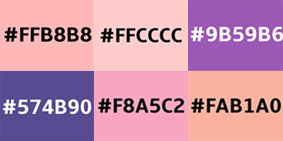

Las decisiones de la paleta cromática fueron basadas en la estética del capítulo elegido. En Nosedive, predominan los tonos rosados, violetas y pasteles, por lo tanto, en el diseño del sitio estos fueron los colores principales. Toda la cromaticidad se maneja dentro de este sistema de colores y va variando dependiendo de la sección, pero siempre entre los tonos mencionados.

El Logo
El isologo de la página web fue creado teniendo en cuenta una de las características principales de Nosedive. Este consiste en el nombre del capítulo con la fuente “Century Gothic” en mayúsculas, y en 5 estrellas. Las estrellas se deben a que en nosedive, la gente se puntúa mediante un sistema de estrellas. Es esto lo que la protagonista, y la mayoría de la sociedad persigue, y lo que genera la trama de la historia. El logo mantiene la paleta de colores, como todo el diseño general.
Tipografía
CENTURY GOTHIC
ABCDEFGHIJKLMN
ÑOPQRSTUVWXYZ
abcdefghijklmnño
pqrstuvwxyz
! / 0 1 2 3 4 5 6 7 8 9 :;= ? @
La tipografía elegida para todo el sitio es Century Gothic. Es utilizada en regular, y con su variante bold. Esta fuente fue elegida teniendo en cuenta las fuentes que aparecen en el capítulo, las cuales son livianas y legibles. Century Gothic se ajusta perfectamente a estas características siendo la fuente ideal para el diseño del sitio web de Nosedive. Las jerarquías se marcan variando el tamaño de la fuente y con negrita.
Elección de Imagenes
Las imágenes fueron elegidas en base a su importancia en el capítulo. Por este motivo, todas las imágenes que aparecen en la web forman parte de las escenas más relevantes del capítulo.